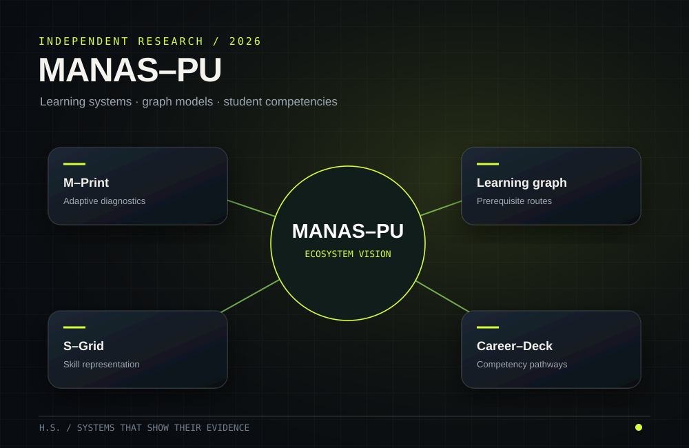

← Selected work
Education technology · Competency systems · Graph learning
MANAS–PU
A proposed Panjab University-oriented student learning ecosystem connecting evidence-aware assessment, concept dependencies and skill representation.
Evidence status: Architecture under development; public M–Print component exists. No verified university deployment or psychometric efficacy study.
Inspect the M–Print source ↗
The question
behind the work.
The platform idea began with a design question: can a university make learning progress, prerequisite gaps and transferable skills more legible without reducing students to a single grade?
System components
Design choices
The working architecture combines a Flutter app concept, FastAPI services, SQLite event storage, Neo4j concept relationships and optional structured LLM assistance. Distinct components are at different maturity levels.
The design favours explanation of the evidence used to suggest a learning route rather than diagnosing a student’s personality or claiming to know how they think.
Evidence and next experiments
The publicly inspectable M–Print repository demonstrates a prototype and states its own limitations. A university-scale deployment, calibration study or verified learning gain has not been established.
Next work includes independently checked item banks, human subject safeguards, reliability and accessibility testing, and rigorous comparison with non-adaptive baselines.
Proficiency estimates are hypotheses about performance—not definitive portraits of a person.